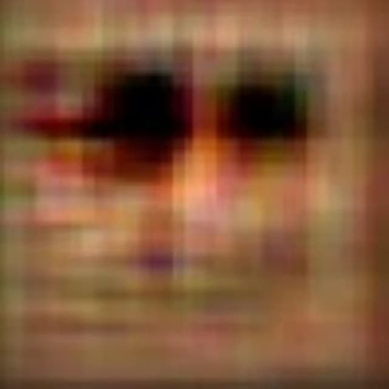

CHA
(Cryptid Hunting Association)
Homepage
Entry page
Report Page 3
Beware...
...of those creatures. If you ever see them, report to us immedeatly!
Entry 1 : The Smile dog
It is what appears to be a humanoid creature with dog's head. It also has a physical strength and agility of 2 times more than average human's. The cryptid got its name because of its facial features resembling a smile. If encountered
DO NOT
aprroach it!. The cryptid is dangerous at close distance so always keep your distance and try to hide. This cryptid inhabitates in the North America continent and have been sighted in North Carolina, Colorado and Arkansas state forests. Multiple attempts to catch or kill this creature were made, but none of them were successfull.
A photo made by a survived hunter.
Entry 2 : The Stick-Man
The Stick-Man is a creature with limb stretching abilities. There is no actual shape and height of the body as it can constantly change. It got the name Stick-Man because when travelling the creature will acquire the stick shape most of the time. It's unknown if the cryptid is hostile or not because a lot of people who come in contact with it go missing. So even if you are a professional Cryptid Hunter, you should
THINK TWICE
before letting the creature see you. This cryptid has been multiply seen in urban regions of Moscow, Russia. There is too little information on whereabouts and abilities of the cryptid so we can't plan anything serious at the moment.
Entry 3 : Digital Soul
The Digital Soul AKA LkLZi$O9ewn?$.exe is officially considered a computer virus that can cause massive damage of high volumes. But our researchers found out that this virus has a very advanced AI and in some cases very interactive to user's actions. Most of our researchers believe that this is a person who somehow trapped himself in a computer program. We tried on multiple occasions communicate with the cryptid but only thing we got was gibberish or words that resemble a call for help. If you ever somehow get this virus on your hardware
BY NO MEANS DON'T
destroy it. Report to our nearest branch or to our website and we will extract your hardware for further research.

The display of the computer 2 hours after virus infection.